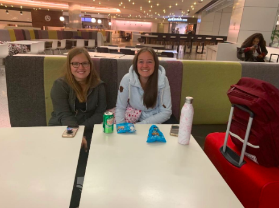
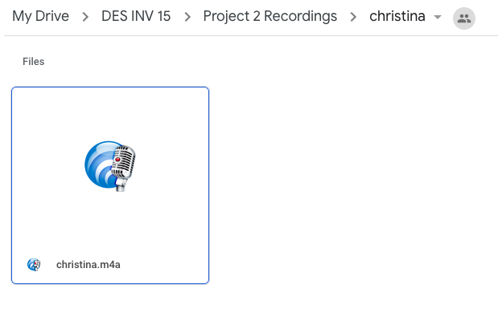

Circle
Role: Product Designer, Brand Designer, & UI/UX Designer
Duration: July - August 2019
Collaborators: Henry Hao, Cathy Li, Purvi Ratnani
Design programs used: Figma, Adobe Illustrator

Screens
Click here to play with the actual prototype. See descriptions below to understand the purpose behind each screen.
(Try clicking around on each screen in the prototype -- you can click on anything that flashes blue!)
Home Tab
- Breathe. Do breathing exercises to relax and feel better.
- Listen. Listen to funny and/or encouraging recordings sent to you from your close family/friends. If you want, you can also respond to and/or save the recording.
- Help me feel better. If you're feeling particularly stressed, anxious, depressed, etc, click here to do a combination of breathing exercises and listening to recordings.
Contacts Tab
Find everyone from your close circle here.
Feed Tab
Here, you can check how your close circle is doing, as well as make a status about how you are doing.
Profile Tab
Update this page with a status about how you are doing for your close circle to see.
- Progress. Check your own progress over the past month with personalized stress and emotion graphs.
- Saved Recordings. Your saved recordings from your close circle will appear here, so you have easy access to them.
- Sent Recordings. Check this page to see when your family and friends have opened your recording and what they've said in response.
Friend's Profile
Check a friend's profile to see how they are doing and/or to record a voice message for them.
Record
Record a voice message for someone from your close circle!
- If you're not sure what to say, we have some suggestions in the "Don't know what to say?" dropdown.
- (Optional) Type an original caption and choose a GIF to go with your recording - when your friend receives it, they will see the GIF under their "Open when [caption]" section.
Overview
Circle is a mindfulness app connecting you to your loved ones in times of both success and hardship.
By exploring the areas of transportation, travel, festivals, and gatherings in relation to conviviality, my group discovered that people necessarily go through the stage of being alone before and after a social event or hangout. People nowadays are also doing things alone more often (source). We decided to focus in on this opportunity space and thought of the question, "How might we make the typical group activities inviting for single individuals? (i.e. movies, eating out, parties, etc)" to guide our design.
Through ideation, we came up with the initial idea of listening to recordings from friends encouraging you in taking self-care time for yourself. After some simple prototyping and testing, we expanded on this idea to create Circle, a mindfulness app in which you can send and receive encouraging recordings to and from your close circle of loved ones.
If I could've done this project again, I would've made the app prototype look more polished, i.e. adding in animations for icons, fleshing out the user experience, etc. I would've also tested the app prototype with people to get their feedback and be able to iterate with a user-centric mindset.
Prompt
For this project, my class was given an open prompt:
Design the future of conviviality.
Exploration
Google defines conviviality as "the quality of being friendly and lively; friendliness."
To come up with our own definition of conviviality, we did some exploration -- we went out into the world and observed. Some of the spaces we came across were eating together, being inefficient together, ice-breakers in orientations, and public transportation.
From our exploration, our initial definition of conviviality was:
Forming connections by being physically or digitally present in the same space and spending time together
Going forward, the spaces we decided to focus on were:
- Transportation (specifically waiting areas for public transportation)
- Virtual reality (VR)
- Icebreakers
- Deciding what to eat
Secondary Research
We did some secondary research online to gain a better understanding of these spaces and how conviviality would fit into these spaces.
We found that
- Users of public transportation perceive waiting times as longer than they actually are. This is because they find the wait unpleasant (source)
- "Approximately 1 in 5 adults in the U.S. (46.6 million) experiences mental illness in a given year" (source), and people are using virtual reality exposure therapy to help (source)
In addition, in our own experience, icebreakers aren't very effective in connecting people who don't know each other. Also in our own experience, deciding what to eat with friends can be difficult.
Using this information, our original statement of intent, more related to the topics of transportation and icebreakers, was
"We want to break down barriers to communication between strangers in a more effective manner."
User Research
From there, we conducted user interviews with people related to our design spaces:
- Alven, an extreme user who has an almost 4-hour commute to and from work each day (public transportation)
- Denise and Johanna, travelers in the airport (public transportation)
- Anya, an orientation leader (icebreakers), and
- Kevin and Liz, average users who go out to eat with friends (deciding what to eat)
Alven's diagram of the Millbrae station

Denise and Johanna
Here are some key quotes:
- "I don't want to talk to other people on my commute. That's just how I am, I'm just trying to mind my own business" (Alven)
- "Our advice for conviviality is to talk. Just spend time and talk" (Denise and Johanna)
- "Team-building activities are proven to naturally bring people closer together" (Anya)
Synthesis
Going forward with our research was extremely difficult and confusing. We still had our toes dipped in so many different areas.
Here is our initial affinity diagram with photos and the most important insights from our research.

I encouraged my group to do further affinity diagramming to try to find patterns or interesting themes across our different topic spaces.
After some discussion, we all chose which topic spaces and themes were most interesting to us.
We also created several different personas to help build empathy and understanding for our users.

Key Insights
A few of our key insights were
- Doing a goal-oriented activity together results in more bonding between people than a traditional icebreaker.
- People feel uncomfortable meeting new people if they're not in the mood to interact.
One of the most influential POVs from our insights and personas was:
A shy techie seeks to meet people in her community more naturally because she is uncomfortable with conventional ways of meeting new people.
Initial Ideation
Based on our key insights and POVs, we formulated some initial HMW questions to help us brainstorm.
During this process, Henry brought up the interesting point that people who go to social events alone often feel excluded and lonely. For example, a guy who goes to a rush event with his friend probably feels a lot more comfortable than a guy who goes alone to the same event. This led to the How Might We (HMW) question, "HMW change the status quo of going to social events alone?"
Pivot
At this point in the process, we had thought up some additional HMW questions, but our group still had too many areas of interest. We really needed to narrow down and choose one direction to go with.
After discussing for a while, we realized that we all thought the point Henry brought up earlier was very interesting, the point that people who go to social events alone often feel excluded and lonely.
From here, we decided to expand on this idea and explore the connection between conviviality and being alone.
We also decided that our three main themes for this project should be:
- Confidence
- Community, and
- Mindfulness/self-care
As a group, we talked about a lot of things we've observed in the past that are related to conviviality x being alone.
- We acknowledged that people usually have to be alone before and after a social event or hangout.
- Cathy is usually more productive when she does work alone, but she's even more productive when alone and surrounded by other students doing work (i.e. in a library) than at home.
My friend, Stephanie, also had some thoughts on doing typical group activities alone in public. Something very insightful she said was:
"It can feel uncomfortable at first -- the people you see at these activities are couples and groups usually -- but it's empowering because you're doing something that isn't the social norm."
Further Ideation
Now focusing on conviviality x being alone, we came up with new HMW questions. We decided to use the ones below to guide our brainstorming:
- HMW stimulate users to be in the mood to meet new people by using visual, auditory, or smell stimulation?
- HMW eliminate the use of phones to induce more natural conviviality?
- HMW make spending time doing things by oneself the most exciting part of a social event?
- HMW make the typical group activities inviting for single individuals? (i.e. movies, eating out, parties)
- HMW reduce the "energy barrier" for people to interact? (before or during social events)

Idea Selection
In total, we had around 300-400 ideas, so it was pretty difficult narrowing down.
For each HMW question, we chose a total of 8-10 of our favorite ideas for a grand total of around 45-50 ideas to work with. We organized these ideas into a Now-How-Wow matrix.

From there, we discussed as a group which ideas we should consider moving forward with. Initially, we decided on a few ideas, including a self-care app idea -- an app on which you can listen to encouraging messages recorded by your friends and family. However, we didn't feel very strongly towards any of these ideas except for the self-care app.
After going back to our ideas and discussing with one another more, we chose to go with our self-care app idea and our Gym Mate app idea.
Idea Expansion
We decided to expand our self-care app idea into Circle, an app connecting you to your loved ones in times of both success and hardship.
We've all been stressed or in a bad place before. We decided to expand on this idea in this way because we thought that hearing voice recordings from close friends or family would help a lot during these times of hardship.
We wanted Circle to have both breathing exercises and a way to send and receive encouraging recordings to and from your loved ones. We also wanted to create a positivity feed function, where users could seek advice or encouragement from strangers.

Made by me
We also decided to expand on Gym Mate, an app to connect you with others who are working out.
This app would be for users who want to work out with someone but struggle to find a gym buddy. It would match people based on health goals, workout routine, and music taste.
Initial Prototyping and Testing
To help us decide between our two ideas, we tested the two concepts with users.
Our process for testing Circle was as follows:
A = close friend or family member
- Find out how A is doing through text message, if possible, or draw from prior knowledge of A's life
- Ask if A would be willing to participate in testing for our app - give a brief intro of what the app is, etc
- Make Google Drive folder for A and leave a voice message of encouragement in the folder for A
- Give A a deadline to access it by (since we had a fixed time-span to test)
- Get feedback from A about the process and the recording after A listens to recording

Here are some key quotes from our user testing:
Kevin: "I expected it to feel a little canned, but it was very nice and personal - I felt like you personalized it, and it was relevant to me. Also, you started it with ‘Hi, Kev,' so it was like ‘this is for you.'"
Christina: "I was slightly struggling about [...] today, and hearing your encouragement helped a lot."
3/4 of the users we talked to would use the app! Users liked the personalization of the messages and thought it was a really cute idea. The one concern they brought up was that they thought it might be hard to get their close circle on board with the app as well. We needed to think about how to incentivize people to use our app.
Our results from testing Gym Mate were inconclusive, so we decided to move forward with Circle!
Product: First Iteration
Initially, my group members and I all had pretty different ideas about how the app would work. I led us in sitting down and discussing how we wanted the app to work at a high level. Then, we each worked on wireframing one part of the app. Here is what we came up with.

We decided to incentivize users by having them receive feedback for recordings they sent! (on the Sent Recordings tab in Profile)
Product: Second Iteration
After looking at our wireframes again and getting feedback from our instructors, we decided to make a few key changes and additions.

Additional wireframes/second iterations
The new Listen page
- We hadn't drawn out the Record screens yet, so I drew them out. We added in a "Don't know what to say?" dropdown for users to refer to when they don't know exactly what to say in a recording.
- We decided to simplify the Feed page's functionality in terms of the user's keyboard. The new keyboard only has functions to
- Type
- Take a photo
- Attach a photo, and
- Draw how you feel
- We wanted to make the Listen page more delightful -- the prompts on our original Listen page were pretty depressing (i.e. "Open when you are doubting yourself") -- so we decided to use GIFs for each prompt instead!
- On the Sent Recordings screen, we added a button for the user to listen to a friend's recorded response.
Brand & UI: First Iteration
We really wanted our app to evoke a feeling of brightness and cheerfulness.
For the first iteration of the app, I used a light orange, creamsicle-like color. I used Adobe Illustrator to create some initial logos for us to choose from.
We wanted to test out a pinwheel logo because we thought it would make sense for our product. Pinwheels move in a circular motion, representing our product name, Circle. Pinwheels also have a peaceful feeling to them, which related to our desire for the app to be calming and to help people de-stress.
My group members liked the orange pinwheel the best, so we ended up going with that for the logo.

I wanted to choose a round font to make the app seem a bit more playful, but I also didn't want it to be overtly round. I decided to go with Antipasto Pro for the main font and used Open Sans for small labels, i.e. for the dates on the profile graphs. I used a very light grey color for the app background color because I thought it would look good.
Here's the first iteration of the app.
Brand & UI: Second Iteration
The feedback we received from our instructors was that the orange color we used as the main app color combined with the light grey background color made the app feel very sleepy.
Our goal was still to have the app evoke a feeling of brightness and cheerfulness, so after hearing this, I decided to use the same shade of orange but make it much darker. I also changed the background color to white and created several more screens for the app.
Final Product
Here's what the final version of our app looked like:
Click here to play with the actual prototype. See descriptions below to understand the purpose behind each screen.
(Try clicking around on each screen in the prototype -- you can click on anything that flashes blue!)
Home Tab
- Breathe. Do breathing exercises to relax and feel better.
- Listen. Listen to funny and/or encouraging recordings sent to you from your close family/friends. If you want, you can also respond to and/or save the recording.
- Help me feel better. If you're feeling particularly stressed, anxious, depressed, etc, click here to do a combination of breathing exercises and listening to recordings.
Contacts Tab
Find everyone from your close circle here.
Feed Tab
Here, you can check how your close circle is doing, as well as make a status about how you are doing.
Profile Tab
Update this page with a status about how you are doing for your close circle to see.
- Progress. Check your own progress over the past month with personalized stress and emotion graphs.
- Saved Recordings. Your saved recordings from your close circle will appear here, so you have easy access to them.
- Sent Recordings. Check this page to see when your family and friends have opened your recording and what they've said in response.
Friend's Profile
Check a friend's profile to see how they are doing and/or to record a voice message for them.
Record
Record a voice message for someone from your close circle!
- If you're not sure what to say, we have some suggestions in the "Don't know what to say?" dropdown.
- (Optional) Type an original caption and choose a GIF to go with your recording - when your friend receives it, they will see the GIF under their "Open when [caption]" section.
Reflections
Improvements:
- If I could do this project again, I definitely would've tested the app prototype with users to get their feedback and see if they had any pain points while using it. In the future, I want to make sure to test every design I have with users because I believe that design is and should be extremely user-centric.
- I also would've made the app more polished in general, i.e. adding in animations, fleshing out the UI and interaction more, etc. In the future, I want to make my prototypes more polished, so users will be able to interact as much as they can with the product.